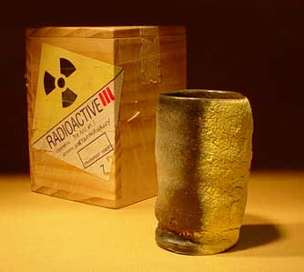

| Rascal Ware, Yunomis and the Law of Unintended Consequences
This is the seventh chapter in a series of articles by Don Pilcher
on some of the characters that have been inspiring him and helping
him with creating his ceramic works. Feedback is welcome: Don Pilcher:
.
Rascal Ware, Yunomis and the Law of Unintended
Consequences - Chapter 7
Please note: this article may be offensive to
some readers.

Michio Fujiwara was a celebrated potter in the city of Hiroshima,
Japan. As an apprentice, he learned the potter’s art in the
early 1920s. Over the years he became especially well-known for
his yunomis and tea ceremony ceramics.
Michio’s son, Ichiro Fujiwara, was born in 1921. He served
his country as a much decorated pilot in the Japanese Imperial Navy.
On December 7, 1941, the youthful Ichiro lead the first air wing
attack on Pearl Harbor. Later in the war, in a furious air and sea
battle against the American fleet, he was credited with inflicting
heavy damage on the USS Missouri. Ichiro would survive World War
II and had planned to open a teahouse/restaurant in peacetime. An
important feature of this venture would include his father’s
very famous yunomis. But in an ironic turn of unintended consequences,
that was not to be.
Michio continued to operate his pottery throughout the war and
his fame as a yunomi maker increased, even during those difficult
times. In 1945, on the afternoon of August the 5th, Michio was loading
his kiln with the intention of a glaze firing the next day. He preheated
all night and by early morning the kiln and its 800 yunomis were
sufficiently warm to proceed.
At the next moment, Hiroshima was introduced into the nuclear age
and these tea cups -- and the rest of the city -- reached the necessary
cone 10 temperature in approximately 6 seconds. The cup shown here
is the lone survivor of that firing. It reveals the marks of uranium
fusion and remains metaphorically radioactive to this day. It is
not recommended for daily use but certainly qualifies as a “cautionary
object” and, as such, a Rascal Ware Original. To the best
of our knowledge, there is no other like it in the world. In a turn
on the Biblical prophesy, this is a case of the sins of the son
being visited upon the father. It was President Harry Truman who
ordered the dropping of the first atomic bomb. Truman was from Missouri.
What goes around comes around.
Junior Bucks
------------------------------------
About Don Pilcher: American studio potter and author.
Pilcher earned a BFA at the Chouinard Art Institute in Los Angeles
in 1964 and an MFA at the Rhode Island School of Design in 1966.
He taught at the University of Illinois at Urbana-Champaign from
1966-99, where he is now Professor Emeritus. He makes wheel-thrown
and altered functional ware. Images & text ©
Don Pilcher. Contact:
.
Rascal Ware Chapter 1/Español
Rascal Ware Chapter 2/Español
Rascal Ware Chapter 3
Rascal Ware Chapter 4
Rascal Ware Chapter 5
Rascal Ware Chapter 6
More Articles |
{kind=link}